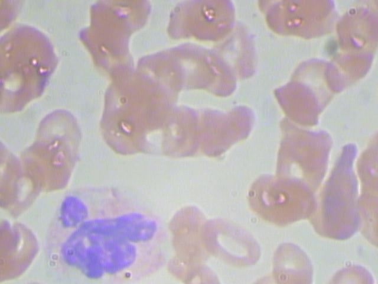

Software Tutorial: Segmenting Nuclei from Cellular Images
Cell Organizer Tutorial
For the following steps, a variety of software and programs are used to go through our PCA Pipeline for the Kaggle White Blood Cells dataset. Please ensure that the following pre – requisite applications have been installed before continuing.
| Required Applications | Terminal Command to Check Version |
|---|---|
| Python (v. 3.7.3) | python –version |
| R (v. 3.5.2) | R –version |
| MATLAB (2016b or newer) | - |
| CellOrganizer (v. 2.8.x) | - |
| RStudio | - |
Furthermore, we ask that you download our WBC_PCAPipeline folder onto your desktop and verify that it has the following contents:
WBC_PCAPipeline
Data
RawImgs
BloodImage_00001.jpg
·
·
·
BloodImage_00410.jpg
WBC_Labels.csv
Step1_Segmentation
WBC_imgSeg.R
Step2_Binarization
WBC_imgBin.m
Step3_PCAModel
WBC_PCAModel.m
Step4_ShapeSpaceVisualization
WBC_SS_CellClass.py
WBC_SS_CellType.py
Step5_Classification
README.pdf
Note: Please ensure the WBC_PCAPipeline file is onto your desktop. Otherwise, you will have to manually change all file paths to point to the appropriate folders on your computer. While unconventional, we’ve noticed occasional software glitches with using setwd() or pwd() otherwise.
Now open a terminal window and navigate into your WBC_PCAPipeline directory by running the following command:
> cd ~/Desktop/WBC_PCAPipeline
Step 1 Nuclear Segmentation
For this dataset, we would like to identify the white blood cell types by the nuclear shape since that particular feature is easy to verify with the naked eye. Moreover, the nucleus of the white blood cell(s) in each image are of a distinctly darker color than the rest of the red blood cells or platelets in the image. This allows us to implement a technique called thresholding. In thresholding, we examine each pixel in the image and reset the color value of the image according to our thresholds. If the original RGB values for the pixel are above the thresholds we set in each channel, then we reset the pixel value to white. All other pixels below the thresholds will be set to black (ideally). This way, our target, the white blood cell nucleus, is a white blob in a black background.
Open RStudio, and navigate to File --> Open File, and find Desktop/WBC_PCAPipeline/Step1_Segmentation/WBC_imgSeg.R.
Should you be asked in the console about upgrading dependencies during the EBImage library installation, type in a and hit enter.
Note: If you source the file multiple times, three directories are created each time within the Data folder with the form of SegImgs_i, ColNuc_i, and BWImgs_i, where i is an integer. The images are only segmented into the most recently created directories (those with the largest value of i). Should you run into trouble and need to run this file multiple times, ensure that future file paths are pointing to the right folders!
After we have sourced our R file, you’ll notice the creation of three directories of the form: SegImgs_1, ColNuc_1, and BWImgs_1 within the Data folder.
Assuming the file ran correctly, the first directory, SegImgs_1, contains all of the segmented nuclei images where the white blood cell nucleus is in white and the rest of the image is seemingly in black. The second directory, ColNuc_1, should be empty, but will eventually contain all of the segmented nuclei images; however, the white blood cell nucleus will be in its original color and the rest of the image will be in black. Finally, the third directory, BWImgs_1, should be empty, but will eventually hold binarized versions (strictly black and white) of the images in SegImgs_1.

Nuclear Segmentation Example using BloodImage_00001.jpg.
Greyscale segmented nucleus from the above image.